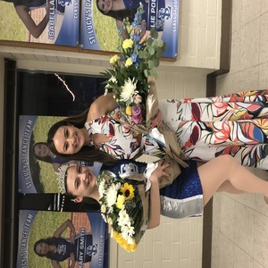
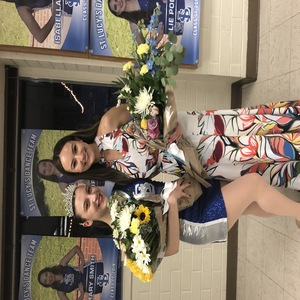

Lauren Dain
My name is Lauren Dain, I am a first year, premed, neuroscience major at UC Riverside. I am sophomore standing as a first year student with a 3.33 cumulative GPA. I took Dynamic Genome my first quarter and had the opportunity to learn how to use a variety of lab techniques. Such skills include gel electrophoresis, using micropipettes, extracting DNA, and transforming bacteria. Prior to remote learning, I was welcomed into Dehesh Lab as an undergrad researcher. My primary goal is to become a pediatric neurologist and pursue and MD/PhD.
Prior to beginning at UCR, I attended St. Lucy's Priory High School. During high school, I was on the Regent Dance Team all four years and was a captain for the Varsity Dance Team my senior year. Being a captain gave me a lot of leadership experience, I was able to work closely with the director and help plan events, choreograph routines, advertise events, and hold auditions. I gained more leadership experience as a member of the Catechetical Student Body (CSB) at my church for the duration of my senior year. CSB was a group of teens and young adults that were the ASB of the church. We would work directly with parents and confirmation students organizing events. Furthermore, CSB was heavy on public speaking and presenting to large crowds. CSB gave me the skills to present and work well with adults. I was also a member of the California Scholarship Federation (CSF) for three years and a member of the National Honors Society (NHS) for two years. CSF and NHS were heavy on volunteering and maintaining a high GPA. I would complete 30 hours of service each year for each organization. Participation in these clubs taught me how to give back to the community while maintaining a high GPA. Furthermore, I spent the summer prior to my junior year volunteering at a preschool. I was able to work closely with teachers and gain an understandng of how young children learn and interact. These experiences in high school taught me how to become a well-rounded, collaborative, integrated, and intelligent individual.
Outside of school experience, I value having hobbies and bonds with family and friends. I danced for 14 years, I specialized in Russian classical ballet, but later expanded to various other styles for four years. I further enjoy listening to music and exploring new genres. I also took an interest in creative writing and often devote time to writing poetry. These hobbies have taught me how to be more innovative and creative in my thought. Outside of hobbies, I enjoy spending time with my family each day; even if I am incredibly busy. I spend most my weekends doing activities with my family or going out with friends. I have maintained several friendships from high school and gained even more friends during college. I make sure to make time for both my high school and college friends. We try to FaceTime often or go out and do things.
Experience
Teaching Assistant
• Ran sessions to help students learn how to code
• Reviewed and graded student coding projects
• Created educational content to help promote student education
• TA'd for over 400 students each academic quarter
Education
UC Riverside
University of California Riverside
University of California Riverside
Portfolio


